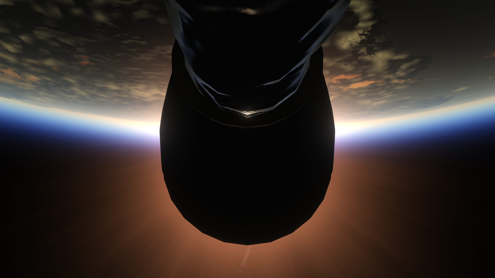
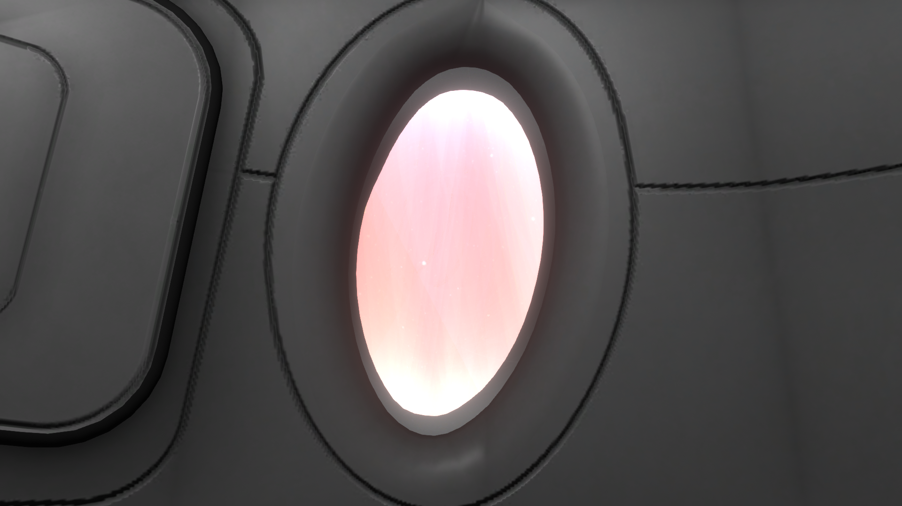

Thermodynamic & Aerodynamic Stress Test No. 1
Vehículo: Falcon 9 Block 5
Fecha: 22 de marzo de 2025
Estado: Éxito

Introducción
Lanzamiento de prueba para la cápsula Dragon no tripulada a bordo del B1066. No se recuperó la primera etapa para maximizar el estrés estructural, aerodinámico y térmico. Se alcanzaron altas temperaturas y ligeras turbulencias, aún así, superando todas las capas de la atmósfera y aterrizando a ~1.7 Km de la plataforma.
Detalles Técnicos
- Vehículo: Falcon 9 block 5
- Altura del cohete: 70m
- Propulsor: B1066.1
- Tripulación: N/A
- Órbita: N/A
- Recuperación: Desechable
Imágenes de la misión



